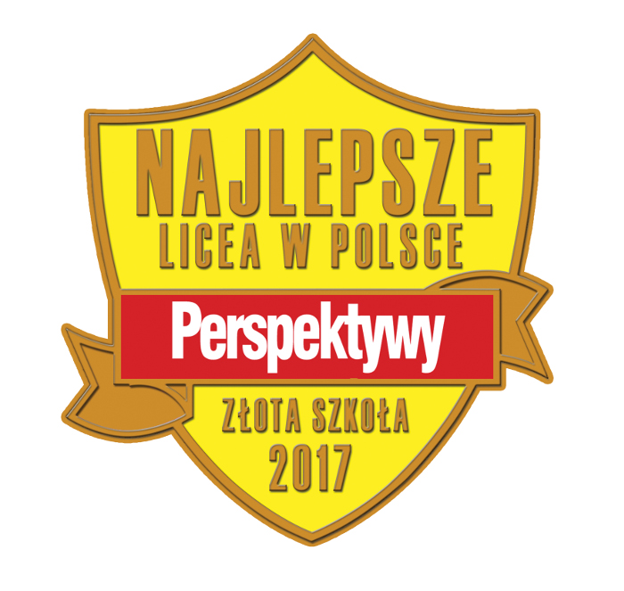

Gazeta ZSO nr II w Opolu
Numer 3/2017
Olimpijska Dwójka 20. w kraju i 1. w województwie

Nasze Liceum zajęło 37. miejsce w opublikowanym przez miesięcznik Perspektywy ogólnopolskim rankingu liceów ogólnokształcących 2017. Warto dodać, że w porównaniu z wynikami z ubiegłego roku Dwójka awansowała aż o 20 miejsc! Oprócz głównego rankingu, publikowane są także podrankingi: m.in. Ranking Szkół Olimpijskich, gdzie PLO nr II uplasowało się na 20. pozycji, co daje pierwsze miejsce w województwie.
Tak wysoką lokatę szkoła zdobyła dzięki ciężkiej pracy olimpijczyków, m.in. Annie Herud z III D. - Udział w Olimpiadzie Geograficznej daje mi przede wszystkim wiedzę praktyczną. Uwielbiam podróżować, poznawać inne kultury i na pewno moją przyszłość wiążę właśnie z geografią. Zaciskam więc zęby i siadam do nauki, aby osiągać postawione cele i spełniać marzenia – mówi Ania. - Chociaż udało mi się już uzyskać tytuł laureata z Olimpiady Języka Niemieckiego, w tym roku znów planuję spróbować swoich sił, chcę sprawdzić, czy teraz też mi się uda.
Dwójka daje możliwość uczestniczenia w wielu olimpiadach, które pozwalają rozwijać pasje i zainteresowania uczniów. Agata Kubec, uczennica klasy 3H jest finalistką Olimpiady Filozoficznej: - od zawsze interesowała mnie historia tej dziedziny, a przez udział w olimpiadzie miałam szansę pogłębić swoją wiedzę, nie tylko poprzez naukę w szkole czy w domu, ale też przez uczęszczanie na dodatkowe zajęcia na Uniwersytecie Opolskim. Udział w Olimpiadzie pozwolił mi zweryfikować moje wiadomości , a także pomógł uodpornić się na stres, co z pewnością przyda się na zbliżającej się maturze czy nawet studiach. Uzyskany tytuł daje mi stuprocentowy wynik z matury z filozofii, a także upoważnia do wstępu na niektóre uczelnie bez konieczności przechodzenia klasycznej rekrutacji.
Do osiągnięcia tego wyniku przyczynili się również nauczyciele, którzy koordynują przygotowania oraz zachęcają uczniów do udziału w licznych olimpiadach i konkursach przedmiotowych.
Ranking nie odzwierciedla wszystkich możliwości naszych uczniów, ponieważ liczba olimpijczyków dzielona jest przez ogólną liczbę uczniów w danym liceum. W Dwójce jest 745 uczniów, z czego ok. 250 maturzystów, co w porównaniu z mniejszymi szkołami działa na niekorzyść w konstruowaniu Rankingu.
ul. Pułaskiego 3
45-048 Opole
tel. 077 45 422 86
fax 077 02 18 87
e-mail:
bez.tytulu@o2.pl
Ola Orłowska
DTP
Michał Woś
Opiekun
mgr Lucyna Rudnik
Ola Orłowska, Ania Cichy, Dagmara Cioska, Julia Nowicka, Julia Marcinów, Hania Szarzewicz, Michał Woś, Bartek Lipnicki, Jonasz Mularz, Paweł Kubacki, Mateusz Pietruszyński, Mateusz Orlik